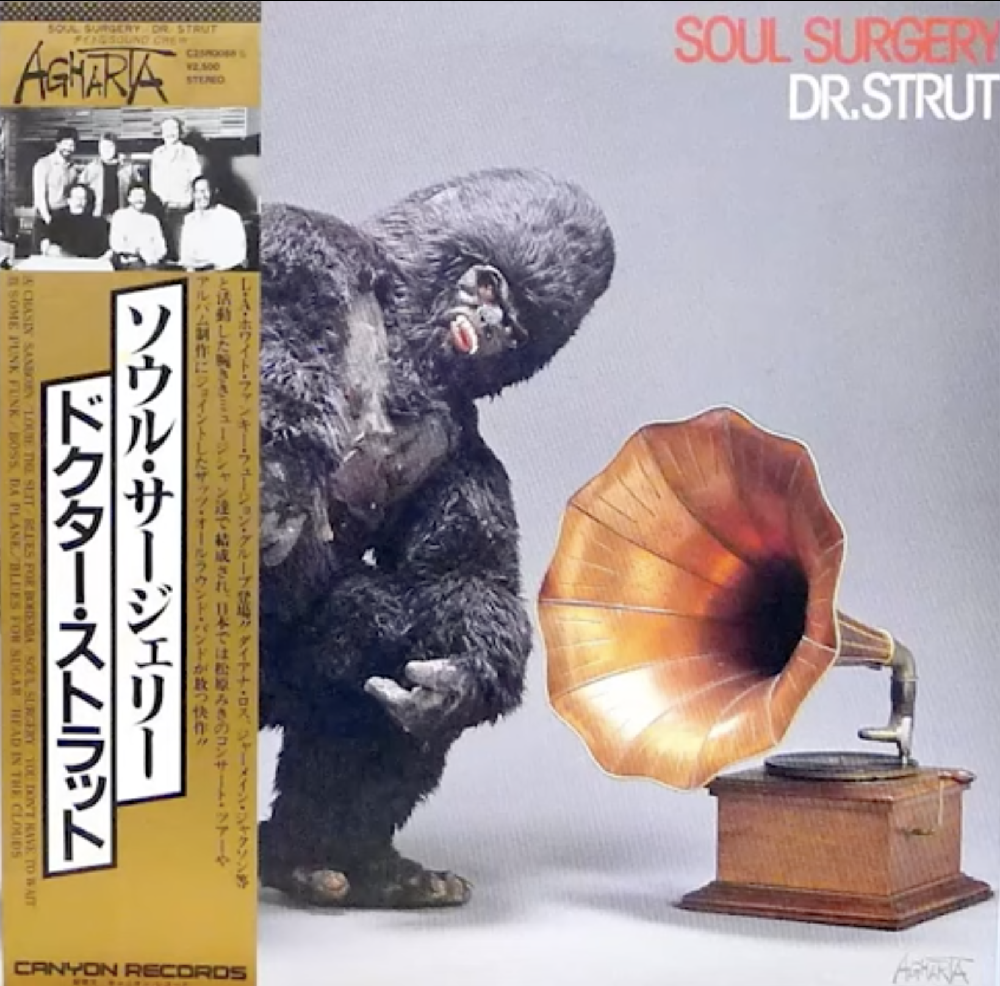

Day 90

Dr. Strut ◆ Soul Surgery ◆ 1982
看到这张封面我的第一反应是：好怪，好喜欢www。这么有意思的封面当然要听听。这张专辑也没让我失望！尤其第一首 Chasin' Sanborn 太有意思了，古灵精怪的，也很符合封面www。这张专辑有点让我想到 Native Son，感觉都是这种有点爵士放克的。
另外这张封面让我想到了一个油管播主，Saxsquatch。我当时看到的视频是这个：Every breath you take (watch til the end)，哈哈哈。